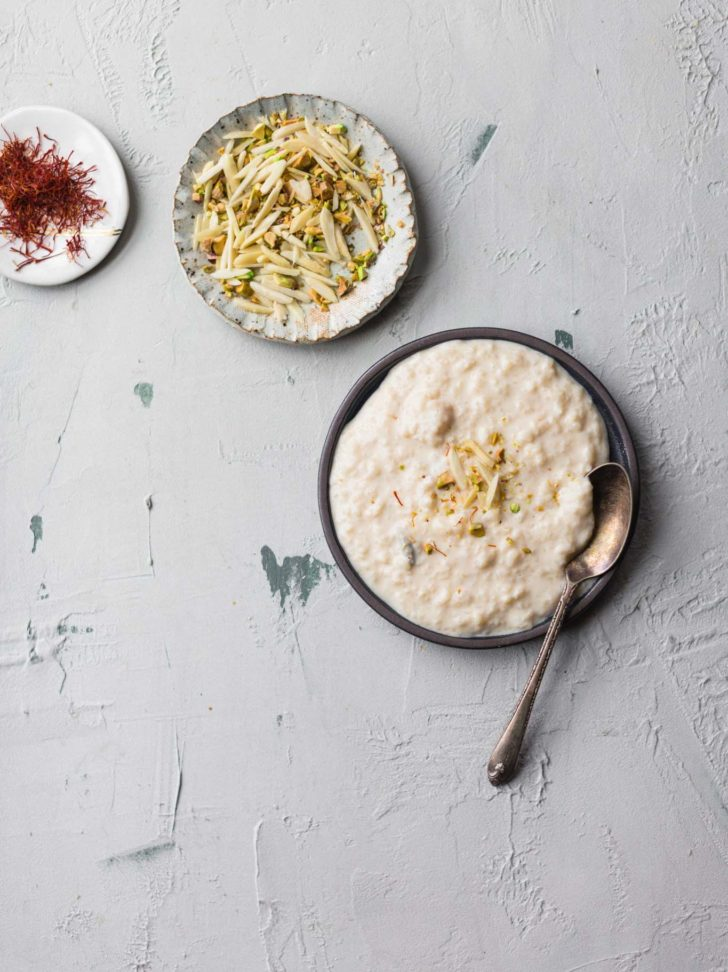
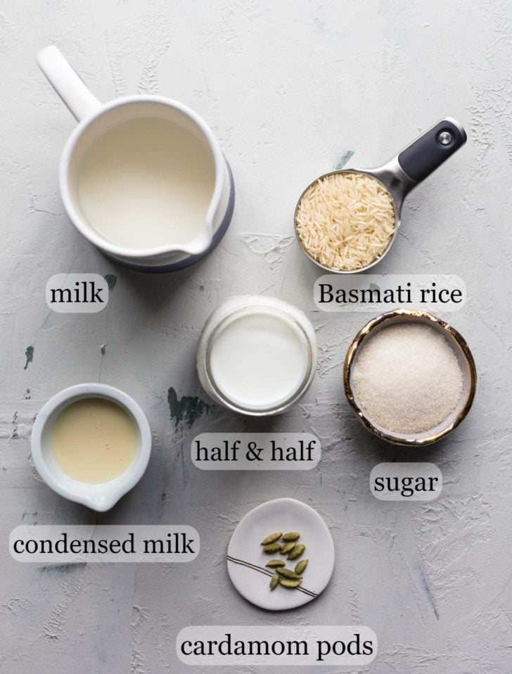

Kheer

Description
Kheer, also called chawal ki kheer, is a South Asian style rice pudding made with milk, sugar, and rice. Traditionally, the milk and rice is reduced down for hours which results in a beautiful taste and texture.
Ingredients
This kheer only requires 6 ingredients.
- Milk and condensed milk
- Rice
- Sugar
- Nuts
- Saffron
- Kewra/Rose Water

Steps
- Pour in the milk, half and half, and cardamom pods and bring everything to a light boil. Stir frequently, but you don't have to stir constantly. It's important to allow the milk to come to a boil because if you just dump and go, the milk is likely to stick to the bottom.
- Mix in the pre-ground rice. Then close the lid, press Porridge Setting, and walk away. Allow the pressure to naturally release. Manually releasing will cause the kheer to splatter all over.
- Once you remove the lid, stir in the sugar and condensed milk. Then sauté down depending on how thin or thick you'd like the kheer.
- The rice will absorb the liquid once it's removed from the heat, and it'll thicken up even more once chilled. I generally sauté down for 3-5 minutes. If you prefer runnier kheer, sauté for 1-2 minutes.
- Use a wooden spoon to mash the rice against the sides for a creamier texture. It's crucial for to dissolve into the kheer.
- Add kewra essence or rose water and garnish with nuts, if desired. And you're done!